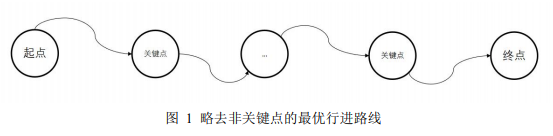
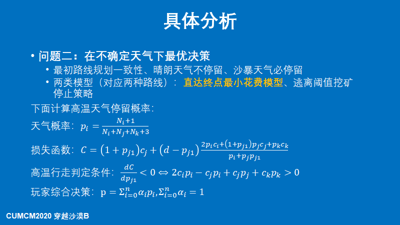
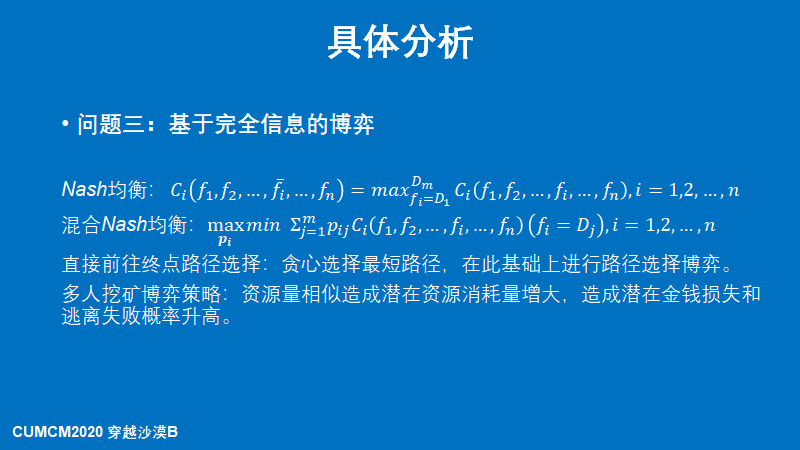

比赛官网: http://www.mcm.edu.cn/
玩家拥有地图，可利用初始资金购买一定数量的水和食物，从起点出发，在 沙漠中行走。游戏目标是在规定时间内到达终点，并保留尽可能多的资金，具体设定参数见论文与赛题。 该模型需要解决的问题如下
(1) 假设只有一名玩家，在整个游戏时段内每天天气状况事先全部已知，给 出一般情况下玩家的最优策略，并求解附件中的“第一关”和“第二关”。
(2) 假设只有一名玩家，玩家仅知道当天的天气状况，可据此决定当天的行 动方案，试给出一般情况下玩家的最佳策略，并对附件中的“第三关”和“第四 关”进行具体讨论
(3) 现有 n 名玩家，他们有相同的初始资金，且同时从起点出发。假设在整个游戏时段内每天天气状况事先全部已知，每名玩家的行动 方案需在第0 天确定且此后不能更改。试给出一般情况下玩家应采取的策略，并 对附件中的“第五关”进行具体讨论。假设所有玩家仅知道当天的天气状况，从第1天起，每名玩家在当天行 动结束后均知道其余玩家当天的行动方案和剩余的资源数量，随后确定各自第二 天的行动方案。试给出一般情况下玩家应采取的策略，并对附件中的“第六关” 进行具体讨论
本文针对沙漠掘金问题进行了研究，在不同的条件之下给出了多种简化方法 以及决策模型，以针对最多金钱路线进行探究。
针对问题 1，考虑确定信息，本文利用资源无剩余、最短路径策略、无向图 简化、多余边去除的简化方法和晴朗天气不停留、最多挖矿、补货贪心的通用策 略，以及动态规划最小花费下界策略来进行路径选择。
针对问题 2，考虑不确定天气情况，对于沙漠地图进行最初路线规划一致性、 无向图简化、多余边去除、晴朗天气不停留、预决策进行信息决策简化。同时利 用天气概率，提出基于天气概率的直达终点最短花费模型，得到高温下在花费和 天气信息下的决策行为，并结合玩家决策倾向综合考虑各种因素最优策略的玩家 最终决策。对于挖矿行为，本文提出基于逃离阈值的挖矿停止指导策略，以玩家 设定逃离阈值（因为资源缺少而中途结束游戏的概率）计算村庄补货、前往终点 的逃离时机
针对问题 3，我们做出最短路径简化，以基于混合 Nash 模型给出博弈决策 形式，在具体情况之下，同时对于多人挖矿情形给出基于资源相似度的考虑法则 和提早补货的决策
本文模型方法多样，涵盖有等效简化、降维简化、综合指导策略、定量决策 判定等思想，同时原理直观、最终形式直接，符合一般直觉。缺点是无法给予通 用的定量策略